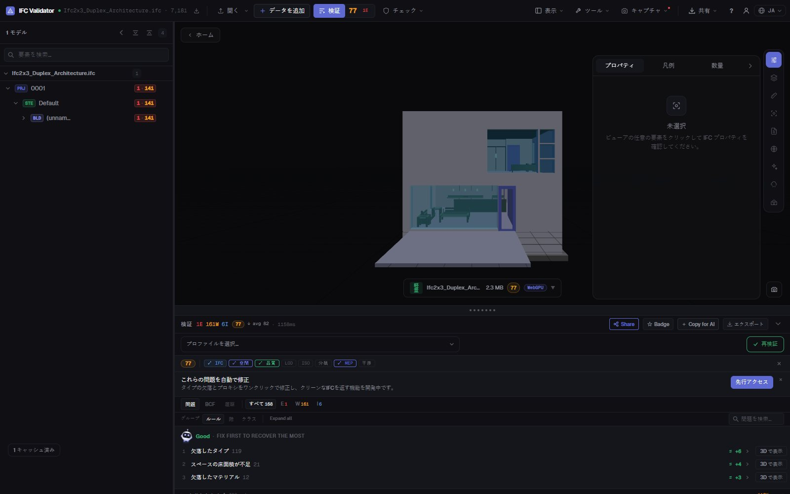
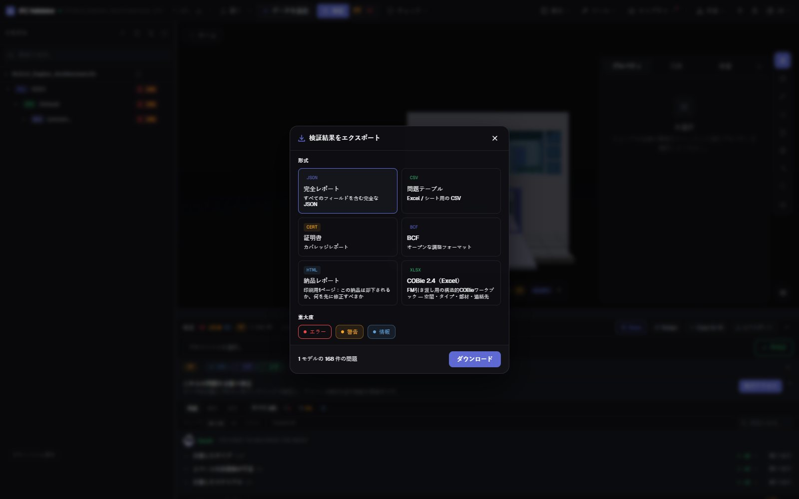

IFC モデルのヘルスチェック
30 秒でスコアとレポート
IFC をドロップすると、44 の品質ルール（GUID、空間構造、タイプ、材料、プロパティセット、座標）で 0〜100 の Health Score を算出し、最も減点の大きい 3 つの問題を先頭に表示します。その後、印刷可能な納品レポート、証明書、BCF、COBie を書き出せます。
ヘルスチェックを実行 — 無料 →アカウント不要 · アップロードなし · ブラウザで動作 · 無料

できること
そのまま提出できるヘルスチェック
発注者にはひとつの数値、作成者には完全なリスト、CDE には証跡を。
Health Score 0〜100
重大度で重み付けしたモデルのデータ品質スコア。業界平均との比較付き。
優先して直す項目
最も減点の大きいルールと取り戻せる点数。ボタンひとつで該当要素を 3D 表示。
44 ルール + IDS
GUID、空間階層、孤立要素、タイプ、材料、Pset、単位、座標、干渉、そして任意の buildingSMART IDS ファイル。
印刷可能な納品レポート
1 ページの HTML レポート（この納品は差し戻されるか、何を直すか）。ブラウザから印刷や PDF 保存ができます。
証明書・BCF・COBie
カバレッジ証明書、作成者向けの BCF 2.1、CSV/JSON、COBie 2.4 ワークブック。
アップロードなし
チェックはブラウザ内の WebAssembly で実行。NDA 案件でも、オフラインでも、どのコンピュータでも。
スクリーンショット

FAQ
よくある質問
IFC モデルのヘルスチェックとは？
IFC ファイルのデータ品質（構造、識別子、分類、プロパティ、座標）の自動レビューです。IFC Viewer Online はこれを 0〜100 の Health Score にまとめ、問題ごとに対象要素を一覧します。
結果を PDF レポートにできますか？
はい。「納品レポート」を書き出してください。スコア、問題数、優先項目をまとめた印刷可能な 1 ページの HTML レポートです。開いてブラウザから印刷、または「PDF に保存」します。JSON 証明書、CSV、BCF、COBie も用意しています。
チェックのために IFC をアップロードする必要は？
ありません。アップロード型のサービスと違い、ファイルはブラウザで開いてチェックし、サーバーには送信しません。
良いスコアの目安は？
90〜100 は納品可能、75〜89 は軽微な修正でコーディネーションに使用可、50〜74 は納品前に作業が必要、50 未満は深刻なデータ問題があります。
無料ですか？
はい。商用プロジェクトを含むあらゆる用途で無料、アカウント不要、ファイルサイズによる課金もありません。